RDB 文件结构¶
在本章之前的内容中， 我们介绍了 Redis 服务器保存和载入 RDB 文件的方法， 在这一节， 我们将对 RDB 文件本身进行介绍， 并详细说明文件各个部分的结构和意义。
图 IMAGE_RDB_STRUCT_OVERVIEW 展示了一个完整 RDB 文件所包含的各个部分。
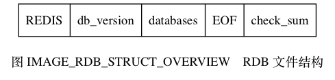
注意
为了方便区分变量、数据、常量， 图 IMAGE_RDB_STRUCT_OVERVIEW 中用全大写单词标示常量， 用全小写单词标示变量和数据。
本章展示的所有 RDB 文件结构图都遵循这一规则。
RDB 文件的最开头是 REDIS 部分，
这个部分的长度为 5 字节，
保存着 "REDIS" 五个字符。
通过这五个字符，
程序可以在载入文件时，
快速检查所载入的文件是否 RDB 文件。
注意
因为 RDB 文件保存的是二进制数据，
而不是 C 字符串，
为了简便起见，
我们用 "REDIS" 符号代表 'R' 、 'E' 、 'D' 、 'I' 、 'S' 五个字符，
而不是带 '\0' 结尾符号的 C 字符串 'R' 、 'E' 、 'D' 、 'I' 、 'S' 、 '\0' 。
本章介绍的所有内容，以及展示的所有 RDB 文件结构图都遵循这一规则。
db_version 长度为 4 字节，
它的值是一个字符串表示的整数，
这个整数记录了 RDB 文件的版本号，
比如 "0006" 就代表 RDB 文件的版本为第六版。
本章只介绍第六版 RDB 文件的结构。
databases 部分包含着零个或任意多个数据库，
以及各个数据库中的键值对数据：
- 如果服务器的数据库状态为空（所有数据库都是空的），
那么这个部分也为空，
长度为
0字节。 - 如果服务器的数据库状态为非空（有至少一个数据库非空）， 那么这个部分也为非空， 根据数据库所保存键值对的数量、类型和内容不同， 这个部分的长度也会有所不同。
EOF 常量的长度为 1 字节，
这个常量标志着 RDB 文件正文内容的结束，
当读入程序遇到这个值的时候，
它知道所有数据库的所有键值对都已经载入完毕了。
check_sum 是一个 8 字节长的无符号整数，
保存着一个校验和，
这个校验和是程序通过对 REDIS 、 db_version 、 databases 、 EOF 四个部分的内容进行计算得出的。
服务器在载入 RDB 文件时，
会将载入数据所计算出的校验和与 check_sum 所记录的校验和进行对比，
以此来检查 RDB 文件是否有出错或者损坏的情况出现。
作为例子，
图 IMAGE_RDB_WITH_EMPTY_DATABASE 展示了一个 databases 部分为空的 RDB 文件：
文件开头的 "REDIS" 表示这是一个 RDB 文件，
之后的 "0006" 表示这是第六版的 RDB 文件，
因为 databases 为空，
所以版本号之后直接跟着 EOF 常量，
最后的 6265312314761917404 是文件的校验和。
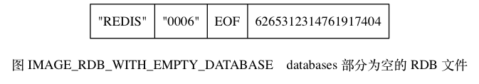
databases 部分¶
一个 RDB 文件的 databases 部分可以保存任意多个非空数据库。
比如说，
如果服务器的 0 号数据库和 3 号数据库非空，
那么服务器将创建一个如图 IMAGE_RDB_WITH_TWO_DB 所示的 RDB 文件，
图中的 database 0 代表 0 号数据库中的所有键值对数据，
而 database 3 则代表 3 号数据库中的所有键值对数据。
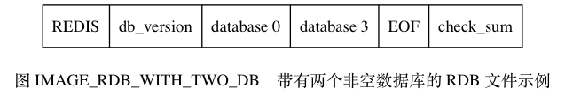
每个非空数据库在 RDB 文件中都可以保存为 SELECTDB 、 db_number 、 key_value_pairs 三个部分，
如图 IMAGE_DATABASE_STRUCT_OF_RDB 所示。
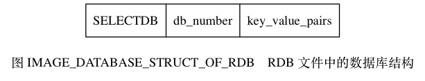
SELECTDB 常量的长度为 1 字节，
当读入程序遇到这个值的时候，
它知道接下来要读入的将是一个数据库号码。
db_number 保存着一个数据库号码，
根据号码的大小不同，
这个部分的长度可以是 1 字节、 2 字节或者 5 字节。
当程序读入 db_number 部分之后，
服务器会调用 SELECT 命令，
根据读入的数据库号码进行数据库切换，
使得之后读入的键值对可以载入到正确的数据库中。
key_value_pairs 部分保存了数据库中的所有键值对数据，
如果键值对带有过期时间，
那么过期时间也会和键值对保存在一起。
根据键值对的数量、类型、内容、以及是否有过期时间等条件的不同，
key_value_pairs 部分的长度也会有所不同。
作为例子，
图 IMAGE_EXAMPLE_OF_DB 展示了 RDB 文件中，
0 号数据库的结构。
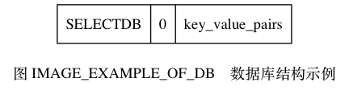
另外，
图 IMAGE_RDB_WITH_DB_0_AND_DB_3 则展示了一个完整的 RDB 文件，
文件中包含了 0 号数据库和 3 号数据库。
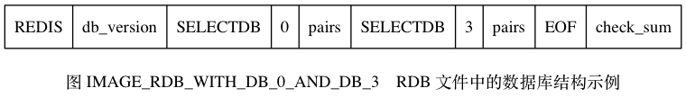
key_value_pairs 部分¶
RDB 文件中的每个 key_value_pairs 部分都保存了一个或以上数量的键值对，
如果键值对带有过期时间的话，
那么键值对的过期时间也会被保存在内。
不带过期时间的键值对在 RDB 文件中对由 TYPE 、 key 、 value 三部分组成，
如图 IMAGE_KEY_WITHOUT_EXPIRE_TIME 所示。
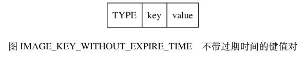
TYPE 记录了 value 的类型，
长度为 1 字节，
值可以是以下常量的其中一个：
REDIS_RDB_TYPE_STRINGREDIS_RDB_TYPE_LISTREDIS_RDB_TYPE_SETREDIS_RDB_TYPE_ZSETREDIS_RDB_TYPE_HASHREDIS_RDB_TYPE_LIST_ZIPLISTREDIS_RDB_TYPE_SET_INTSETREDIS_RDB_TYPE_ZSET_ZIPLISTREDIS_RDB_TYPE_HASH_ZIPLIST
以上列出的每个 TYPE 常量都代表了一种对象类型或者底层编码，
当服务器读入 RDB 文件中的键值对数据时，
程序会根据 TYPE 的值来决定如何读入和解释 value 的数据。
key 和 value 分别保存了键值对的键对象和值对象：
- 其中
key总是一个字符串对象， 它的编码方式和REDIS_RDB_TYPE_STRING类型的value一样。 根据内容长度的不同，key的长度也会有所不同。 - 根据
TYPE类型的不同， 以及保存内容长度的不同， 保存value的结构和长度也会有所不同， 本节稍后会详细说明每种TYPE类型的value结构保存方式。
带有过期时间的键值对在 RDB 文件中的结构如图 IMAGE_KEY_WITH_EXPIRE_TIME 所示。
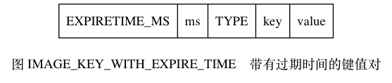
带有过期时间的键值对中的 TYPE 、 key 、 value 三个部分的意义，
和前面介绍的不带过期时间的键值对的 TYPE 、 key 、 value 三个部分的意义完全相同，
至于新增的 EXPIRETIME_MS 和 ms ，
它们的意义如下：
EXPIRETIME_MS常量的长度为1字节， 它告知读入程序， 接下来要读入的将是一个以毫秒为单位的过期时间。ms是一个8字节长的带符号整数， 记录着一个以毫秒为单位的 UNIX 时间戳， 这个时间戳就是键值对的过期时间。
作为例子， 图 IMAGE_EXAMPLE_OF_KEY_WITHOUT_EXPIRE_TIME 展示了一个没有过期时间的字符串键值对。
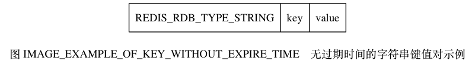
图 IMAGE_EXAMPLE_OF_KEY_WITH_EXPIRE_TIME 展示了一个带有过期时间的集合键值对，
其中键的过期时间为 1388556000000 （2014 年 1 月 1 日零时）。
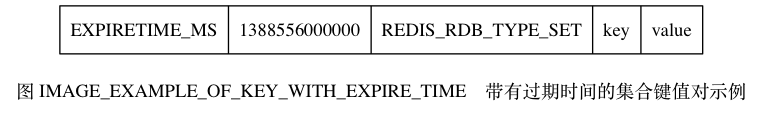
value 的编码¶
RDB 文件中的每个 value 部分都保存了一个值对象，
每个值对象的类型都由与之对应的 TYPE 记录，
根据类型的不同，
value 部分的结构、长度也会有所不同。
在接下来的各个小节中， 我们将分别介绍各种不同类型的值对象在 RDB 文件中的保存结构。
注意
本节接下来说到的各种 REDIS_ENCODING_* 编码曾经在《对象》一章中介绍过，
如果忘记了可以去回顾一下。
字符串对象¶
如果 TYPE 的值为 REDIS_RDB_TYPE_STRING ，
那么 value 保存的就是一个字符串对象，
字符串对象的编码可以是 REDIS_ENCODING_INT 或者 REDIS_ENCODING_RAW 。
如果字符串对象的编码为 REDIS_ENCODING_INT ，
那么说明对象中保存的是长度不超过 32 位的整数，
这种编码的对象将以图 IMAGE_INT_ENCODING_STRING 所示的结构保存。
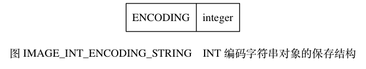
其中，
ENCODING 的值可以是 REDIS_RDB_ENC_INT8 、 REDIS_RDB_ENC_INT16 或者 REDIS_RDB_ENC_INT32 三个常量的其中一个，
它们分别代表 RDB 文件使用 8 位（bit）、 16 位或者 32 位来保存整数值 integer 。
举个例子，
如果字符串对象中保存的是可以用 8 位来保存的整数 123 ，
那么这个对象在 RDB 文件中保存的结构将如图 IMAGE_EXAMPLE_OF_INT_ENCODING_STRING 所示。
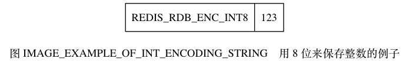
如果字符串对象的编码为 REDIS_ENCODING_RAW ，
那么说明对象所保存的是一个字符串值，
根据字符串长度的不同，
有压缩和不压缩两种方法来保存这个字符串：
- 如果字符串的长度小于等于
20字节， 那么这个字符串会直接被原样保存。 - 如果字符串的长度大于
20字节， 那么这个字符串会被压缩之后再保存。
注意
以上两个条件是在假设服务器打开了 RDB 文件压缩功能的情况下进行的， 如果服务器关闭了 RDB 文件压缩功能， 那么 RDB 程序总以无压缩的方式保存字符串值。
具体信息可以参考 redis.conf 文件中关于 rdbcompression 选项的说明。
对于没有被压缩的字符串， RDB 程序会以图 IMAGE_NON_COMPRESS_STRING 所示的结构来保存该字符串。
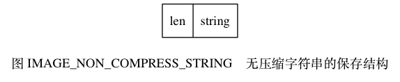
其中， string 部分保存了字符串值本身，而 len 保存了字符串值的长度。
对于压缩后的字符串， RDB 程序会以图 IMAGE_COMPRESSED_STRING 所示的结构来保存该字符串。
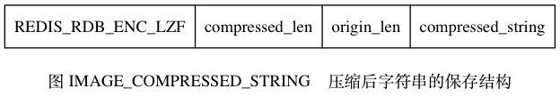
其中，
REDIS_RDB_ENC_LZF 常量标志着字符串已经被 LZF 算法（http://liblzf.plan9.de）压缩过了，
读入程序在碰到这个常量时，
会根据之后的 compressed_len 、 origin_len 和 compressed_string 三部分，
对字符串进行解压缩：
其中 compressed_len 记录的是字符串被压缩之后的长度，
而 origin_len 记录的是字符串原来的长度，
compressed_string 记录的则是被压缩之后的字符串。
图 IMAGE_EXAMPLE_OF_NON_COMPRESS_STRING 展示了一个保存无压缩字符串的例子，
其中字符串的长度为 5 ，
字符串的值为 "hello" 。
![digraph {
label = "\n图 IMAGE_EXAMPLE_OF_NON_COMPRESS_STRING 无压缩的字符串";
node [shape = record];
value [ label = " 5 | \"hello\" "];
}](../../_images/graphviz-6c09555acca8b24e18134b8cbb3fc9444cf93803.png)
图 IMAGE_EXAMPLE_OF_COMPRESS_STRING 展示了一个压缩后的字符串示例，
从图中可以看出，
字符串原本的长度为 21 ，
压缩之后的长度为 6 ，
压缩之后的字符串内容为 "?aa???" ，
其中 ? 代表的是无法用字符串形式打印出来的字节。
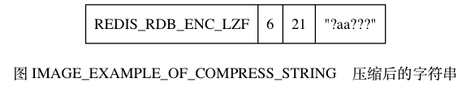
列表对象¶
如果 TYPE 的值为 REDIS_RDB_TYPE_LIST ，
那么 value 保存的就是一个 REDIS_ENCODING_LINKEDLIST 编码的列表对象，
RDB 文件保存这种对象的结构如图 IMAGE_LINKEDLIST_ENCODING_LIST 所示。
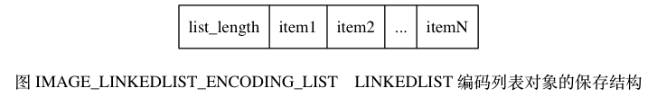
list_length 记录了列表的长度，
它记录列表保存了多少个项（item），
读入程序可以通过这个长度知道自己应该读入多少个列表项。
图中以 item 开头的部分代表列表的项，
因为每个列表项都是一个字符串对象，
所以程序会以处理字符串对象的方式来保存和读入列表项。
作为示例， 图 IMAGE_EXAMPLE_OF_LINKEDLIST_ENCODING_LIST 展示了一个包含三个元素的列表。
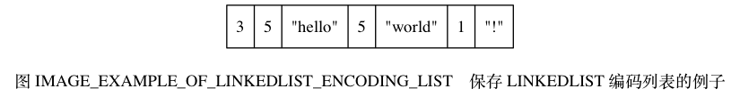
结构中的第一个数字 3 是列表的长度，
之后跟着的分别是第一个列表项、第二个列表项和第三个列表项，
其中：
- 第一个列表项的长度为
5， 内容为字符串"hello"。 - 第二个列表项的长度也为
5， 内容为字符串"world"。 - 第三个列表项的长度为
1， 内容为字符串"!"。
集合对象¶
如果 TYPE 的值为 REDIS_RDB_TYPE_SET ，
那么 value 保存的就是一个 REDIS_ENCODING_HT 编码的集合对象，
RDB 文件保存这种对象的结构如图 IMAGE_HT_ENCODING_SET 所示。
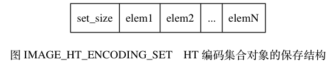
其中，
set_size 是集合的大小，
它记录集合保存了多少个元素，
读入程序可以通过这个大小知道自己应该读入多少个集合元素。
图中以 elem 开头的部分代表集合的元素，
因为每个集合元素都是一个字符串对象，
所以程序会以处理字符串对象的方式来保存和读入集合元素。
作为示例， 图 IMAGE_EXAMPLE_OF_HT_SET 展示了一个包含四个元素的集合。
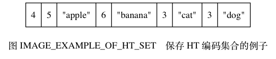
结构中的第一个数字 4 记录了集合的大小，
之后跟着的是集合的四个元素：
- 第一个元素的长度为
5，值为"apple"。 - 第二个元素的长度为
6，值为"banana"。 - 第三个元素的长度为
3，值为"cat"。 - 第四个元素的长度为
3，值为"dog"。
哈希表对象¶
如果 TYPE 的值为 REDIS_RDB_TYPE_HASH ，
那么 value 保存的就是一个 REDIS_ENCODING_HT 编码的集合对象，
RDB 文件保存这种对象的结构如图 IMAGE_HT_HASH 所示：
hash_size记录了哈希表的大小， 也即是这个哈希表保存了多少键值对， 读入程序可以通过这个大小知道自己应该读入多少个键值对。- 以
key_value_pair开头的部分代表哈希表中的键值对， 键值对的键和值都是字符串对象， 所以程序会以处理字符串对象的方式来保存和读入键值对。
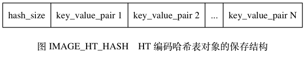
结构中的每个键值对都以键紧挨着值的方式排列在一起， 如图 IMAGE_KEY_VALUE_PAIR_OF_HT_HASH 所示。
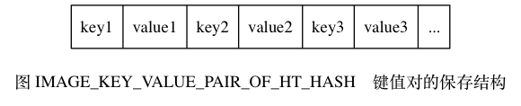
因此， 从更详细的角度看， 图 IMAGE_HT_HASH 所展示的结构可以进一步修改为图 IMAGE_DETIAL_HT_HASH 。
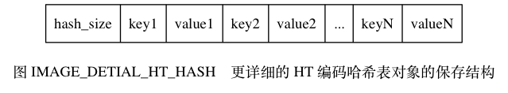
作为示例， 图 IMAGE_EXAMPLE_OF_HT_HASH 展示了一个包含两个键值对的哈希表。
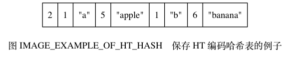
在这个示例结构中，
第一个数字 2 记录了哈希表的键值对数量，
之后跟着的是两个键值对：
- 第一个键值对的键是长度为
1的字符串"a"， 值是长度为5的字符串"apple"。 - 第二个键值对的键是长度为
1的字符串"b"， 值是长度为6的字符串"banana"。
有序集合对象¶
如果 TYPE 的值为 REDIS_RDB_TYPE_ZSET ，
那么 value 保存的就是一个 REDIS_ENCODING_SKIPLIST 编码的有序集合对象，
RDB 文件保存这种对象的结构如图 IMAGE_SKIPLIST_ZSET 所示。
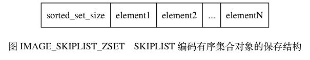
sorted_set_size 记录了有序集合的大小，
也即是这个有序集合保存了多少元素，
读入程序需要根据这个值来决定应该读入多少有序集合元素。
以 element 开头的部分代表有序集合中的元素，
每个元素又分为成员（member）和分值（score）两部分，
成员是一个字符串对象，
分值则是一个 double 类型的浮点数，
程序在保存 RDB 文件时会先将分值转换成字符串对象，
然后再用保存字符串对象的方法将分值保存起来。
有序集合中的每个元素都以成员紧挨着分值的方式排列， 如图 IMAGE_MEMBER_AND_SCORE_OF_ZSET 所示。
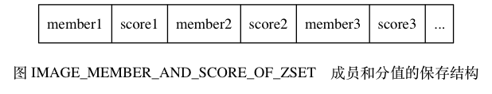
因此， 从更详细的角度看， 图 IMAGE_SKIPLIST_ZSET 所展示的结构可以进一步修改为图 IMAGE_DETIAL_SKIPLIST_ZSET 。
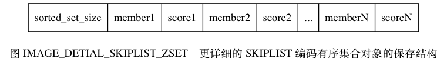
作为示例， 图 IMAGE_EXAMPLE_OF_SKIPLIST_ZSET 展示了一个带有两个元素的有序集合。
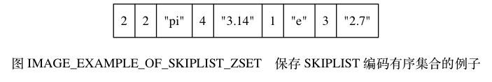
在这个示例结构中，
第一个数字 2 记录了有序集合的元素数量，
之后跟着的是两个有序集合元素：
- 第一个元素的成员是长度为
2的字符串"pi"， 分值被转换成字符串之后变成了长度为4的字符串"3.14"。 - 第二个元素的成员是长度为
1的字符串"e"， 分值被转换成字符串之后变成了长度为3的字符串"2.7"。
INTSET 编码的集合¶
如果 TYPE 的值为 REDIS_RDB_TYPE_SET_INTSET ，
那么 value 保存的就是一个整数集合对象，
RDB 文件保存这种对象的方法是，
先将整数集合转换为字符串对象，
然后将这个字符串对象保存到 RDB 文件里面。
如果程序在读入 RDB 文件的过程中，
碰到由整数集合对象转换成的字符串对象，
那么程序会根据 TYPE 值的指示，
先读入字符串对象，
再将这个字符串对象转换成原来的整数集合对象。
ZIPLIST 编码的列表、哈希表或者有序集合¶
如果 TYPE 的值为 REDIS_RDB_TYPE_LIST_ZIPLIST 、
REDIS_RDB_TYPE_HASH_ZIPLIST 或者 REDIS_RDB_TYPE_ZSET_ZIPLIST ，
那么 value 保存的就是一个压缩列表对象，
RDB 文件保存这种对象的方法是：
- 将压缩列表转换成一个字符串对象。
- 将转换所得的字符串对象保存到 RDB 文件。
如果程序在读入 RDB 文件的过程中，
碰到由压缩列表对象转换成的字符串对象，
那么程序会根据 TYPE 值的指示，
执行以下操作：
- 读入字符串对象，并将它转换成原来的压缩列表对象。
- 根据
TYPE的值，设置压缩列表对象的类型： 如果TYPE的值为REDIS_RDB_TYPE_LIST_ZIPLIST， 那么压缩列表对象的类型为列表； 如果TYPE的值为REDIS_RDB_TYPE_HASH_ZIPLIST， 那么压缩列表对象的类型为哈希表； 如果TYPE的值为REDIS_RDB_TYPE_ZSET_ZIPLIST， 那么压缩列表对象的类型为有序集合。
从步骤 2 可以看出，
由于 TYPE 的存在，
即使列表、哈希表和有序集合三种类型都使用压缩列表来保存，
RDB 读入程序也总可以将读入并转换之后得出的压缩列表设置成原来的类型。